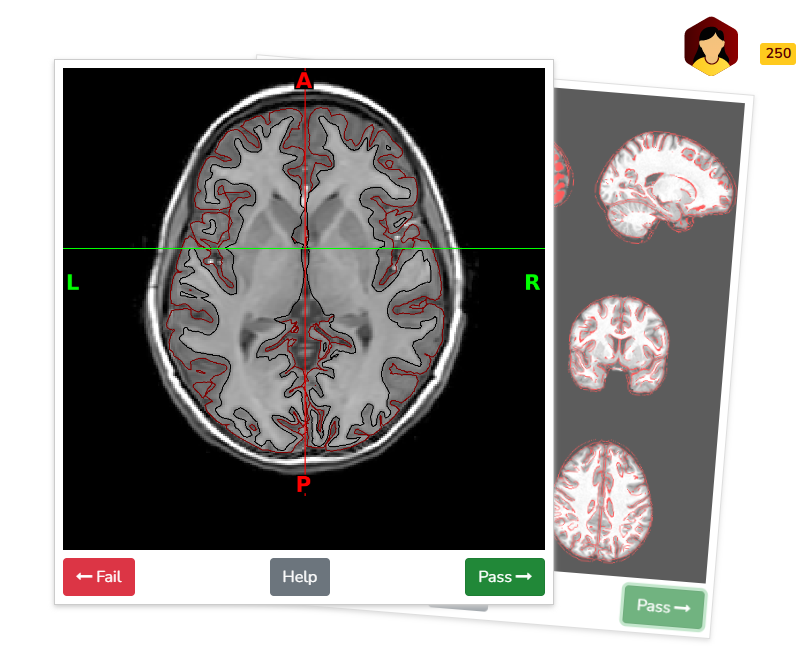

Quality control procedures
BrainSwipes
BrainSwipes results will be provided in a dynamic fashion independent of releases so that users always have the most up-to-date results. It is a community-driven effort and we encourage all users of ABCC data to get involved! Please create a free account on BrainSwipes to get started.
Prior experience with visual QC is not required! Users are guided through a simple tutorial on how to use the platform and perform visual QC before swiping. Note that users must be on a DUC in order to participate.
Manual visual inspection remains the gold standard for identifying artifacts in structural and functional derivatives (e.g., from the abcd-hcp-bids pipeline) and diffusion derivatives (e.g., from QSIPrep). To streamline this process, derivative visual reports are integrated into BrainSwipes, a gamified, crowdsourced QC platform built on the open-source Swipes For Science framework. BrainSwipes engages users in evaluating brain image quality through an intuitive interface designed for large-scale studies. After creating an account, users are guided through a brief tutorial that teaches them how to assess derivative images and classify them as pass or fail.
Surface Delineation:
For structural QA, swipers are presented with image slices in coronal, axial, and sagittal planes to assess the accuracy of T1w and T2w surface delineations in differentiating gray and white matter. Images are derived from XCP-D visual reports.
Atlas Registration:
In addition to surface delineation, structural QA also includes atlas registration quality, evaluated by overlaying delineations of the subject’s image onto the atlas, and vice versa. Swipes display nine T1w slices for visual inspection, with three slices per anatomical plane. Quality is assessed based on the alignment of the outer boundaries of the overlaid contours with those of the underlying image, ensuring minimal gaps or misalignments. Images are derived from XCP-D visual reports.
Functional Registration:
Functional registration is evaluated by overlaying outlines of functional images onto structural images and vice versa. Swipes display nine slices of the same functional image for visual inspection, with three slices per anatomical plane. Quality is assessed similarly to structural atlas registration, focusing on the alignment of the overlaid contours. Additional evaluation includes checking for artifacts such as signal dropout. Images are derived from XCP-D visual reports.
Diffusion Direction Encoding:
Swipes display GIFs of full-resolution T2w images as a grayscale background, with the “Direction Encoded Color” (DEC) map overlaid. These GIFs sweep through a portion of the brain across the three anatomical planes. High-quality processed DWI images exhibit bands of color that closely follow the folds and contours of the grayscale background. These visuals are derived from the QSIPrep report.
Each visual report for a given modality is independently reviewed and rated as a pass or fail, which in the outputs are scored as values of 1 and 0 respectively. BrainSwipes generates a summary of these results that includes the average score as well as number of reviewers for each visual report of each modality.
Example quality assessment of surface delineation on BrainSwipes platform (displaying brain in axial plane at level of basal ganglia/putamen):

Automated Quality Assurance
The following are automated metrics for evaluating data quality of processed structural and functional data. Structural metrics reflect registration and acquisition quality while assessment of functional data quality concerns issues with BOLD acquisitions only, including motion and signal.
Population-based assessment is included as well via outlier detection for both structural and functional metrics. This was done in part because functional population-based metrics may pick up on anatomical issues due to the pipeline’s dependency on good anatomical data. Therefore, for cortical thickness/surface-based analyses, investigators using the data will find it useful to examine how many measures are outliers for a given subject (e.g. out of 352 ROIs, volume is an outlier for X number of ROIs).
Structural and Functional Metrics & QA Requirements
The following metrics are quantified for each BOLD image/run. Overall QA (PASS or FAIL) is then assessed for an image based on whether they meet the requirements described below for both structural and functional metrics.
Structural: Brain Coverage
Brain coverage quantifies the proportion of BOLD acquisition cut off compared to the brain mask in both (1) ventral/inferior and (2) dorsal/superior planes.
To receive a PASS for structural QA, there must be less than 10% cutoff in BOTH planes.
Functional: Presence of parcellated connectivity matrices for each parcellation scheme
This metric marks whether the data includes pconns derived from 5 and 10 minutes of functional data after correcting for motion using a frame displacement threshold of 0.2 mm (Power et al., 2012), serving as a quick indicator of whether there is a sufficient amount of low-motion data present after motion correction.
To receive a PASS for functional QA, a concatenated dense time series must have enough low-motion data to generate pconn files from 5 and/or 10 minutes of data.
Population-Based Outlier Detection
In addition to the metrics mentioned above, we also perform outlier detection to quantify the number of structural and functional outliers for each subject session, defined for any given measure as those falling more than 3 standard deviations from the population mean.
Structural measures: number of outliers in (1) subcortical segmentation volume sizes and (2) cortical morphometry split by regions of interest
Functional measures: number of outliers in connectivity matrices for both (1) 5 minutes and (2) 10 minutes of data post-motion correction
Additional QA Columns Added to sessions.tsv
The following columns are added to each sessions.tsv for Structural QA:
bc_(task)_run-(run_num): Pass/Fail is determined based on a 10% cutoff of the percentage bold coverage.bc_(task)_run-(run_num)_perc_vox: percentage of brain coverage which is used for determining Pass/Fail above.#subcortical_segmentation_vol_out(n=22): Number of outliers for subcortical segmentation volume sizes.#cortical_morphometry_sulc_out(n=333): Number of outliers for cortical morphometry.
Following columns are added to sessions.tsv for Functional QA:
5min_pconn_<atlas>: Pass/Fail is determined based on whether the pconn files from 5 mins of data get produced.10min_pconn_<atlas>: Pass/Fail is determined based on whether the pconn files from 10 mins of data get produced.#pconn_out_5min_<atlas> (n=61776): Number of outliers for 5 minutes pconn#pconn_out_10min_<atlas> (n=61776): Numbers of outliers for 10 minutes pconn
Here, ‘n’ indicates the total number of ROIs/observations used to calculate these outliers and <atlas> refers to the parcellation scheme (including Gordon2014FreeSurferSubcortical, HCP2016FreeSurferSubcortical, Markov2012FreeSurferSubcortical, Power2011FreeSurferSubcortical, and Yeo2011FreeSurferSubcortical).
Note - With the exception of 5min_pconn and 10min_pconn, columns that have 888 indicate that the specific file is missing and not generated.
Diffusion Quality Assurance
Automated quality control (QC) metrics are included in the QSIPrep derivatives provided in the current release. These metrics are described in detail in the QSIPrep documentation.
Each diffusion output image is accompanied by a single-line TSV file named desc-image_qc.tsv, which is especially helpful for comparing image quality across participants before selecting data for group-level analyses. The file includes a variety of QC metrics derived primarily from DSI Studio’s QC calculations as described in Yeh et al. (2019):
- Raw data metrics (prefixed with
raw_):- Quality metrics computed on the diffusion data before preprocessing.
- Preprocessed data metrics:
t1_-prefixed columns: QC metrics calculated in the subject’s T1w (native anatomical) space.mni_-prefixed columns: QC metrics calculated in standard MNI space.
- Motion summary metrics:
mean_fd: Mean framewise displacement.max_fd: Maximum framewise displacement.max_translation: Maximum absolute translation.max_rotation: Maximum absolute rotation.max_rel_translation: Maximum of the derivative of translation (i.e., frame-to-frame change).max_rel_rotation: Maximum of the derivative of rotation.
- Registration quality metrics:
t1_dice_distance: Dice distance between the anatomical brain mask and the DWI brain mask in T1w space.mni_dice_distance: Dice distance in MNI space.
These metrics provide a comprehensive summary of image quality and preprocessing accuracy, facilitating informed inclusion/exclusion decisions for downstream analyses.